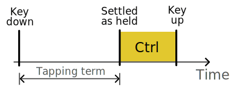
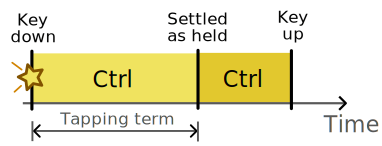
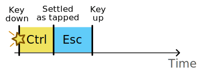

Speculative Hold
Pascal Getreuer, 2025-07-25
Overview
Speculative Hold is a QMK community module that modifies mod-tap
MT keys. The mod is applied immediately on key down,
eliminating delay, particularly when using mod-tap keys in tandem with
an external mouse. Speculative Hold is analogous to
hold-while-undecided in ZMK.
How it works: Consider a LCTL_T(KC_ESC) mod-tap key, behaving as Esc when tapped and Ctrl when held, and suppose we use this key together with a mouse to Ctrl + click.
Without Speculative Hold, the key’s Ctrl function is delayed until the tap-hold decision has settled, by default 200 ms after the key has been pressed. Practically, one must hold the key, pause for a beat, then click the mouse.

With Speculative Hold, the key’s Ctrl function applies immediately on key down.

The mod-tap nevertheless continues to function as Esc when it should. When settled as tapped, the speculatively-held Ctrl is cleared the instant before the Esc tap is sent.

Even though Speculative Hold applies the modifier early, it does not change how the tap-hold decision is settled. Speculative Hold should work when used in combination with QMK’s core tap-hold options. I have tested Speculative Hold particularly together with Permissive Hold + Chordal Hold + Flow Tap.
Limitations
Speculative Hold does not act on mod-tap keys used in or resulting from a combo.
Speculative Hold does not act while a layer-tap
LTkey is unsettled.Changing the hold function of a mod-tap key in
process_record_user()does not work with Speculative Hold. (Changing the tap function, however, does work.)
Add Speculative Hold to your keyboard
Install my community
modules. Then enable module getreuer/speculative_hold
in your keymap.json file. Or if keymap.json
does not exist, create it with the following content:
{
"modules": ["getreuer/speculative_hold"]
}Once installed, Speculative Hold applies by default to mod-tap keys where the mod is a Ctrl or Shift mod. Define the get_speculative_hold() callback to customize this behavior.
Beyond Speculative Hold, you can find further tips for home row mods in Home row mods are hard to use.
Configuration
get_speculative_hold()
The get_speculative_hold() callback is called when a
mod-tap MT key is pressed to determine whether it should be
held speculatively. The default implementation is the following,
enabling Speculative Hold for Ctrl and Shift mod-tap keys as:
bool get_speculative_hold(uint16_t keycode, keyrecord_t* record) {
return (QK_MOD_TAP_GET_MODS(keycode) & (MOD_LALT | MOD_LGUI)) == 0;
}In detail: QK_MOD_TAP_GET_MODS() returns the key’s mods
in the 5-bit mods representation, and it is tested that the
MOD_LALT and MOD_LGUI bits are off. The
callback returns true when the mod is Ctrl, Shift, or Ctrl+Shift for
either the left or right hand. Returning true tells the module to run
speculative hold handling for this key.
To enable Speculative Hold for some mod-tap keys and not others,
define the callback like this, in your keymap.c:
bool get_speculative_hold(uint16_t keycode, keyrecord_t* record) {
switch (keycode) { // Enable speculative holding for these keys.
case LCTL_T(KC_ESC):
case LSFT_T(KC_Z):
case RSFT_T(KC_SLSH):
return true;
}
return false; // Disable otherwise.
}Flashing modifiers
A potential problem with speculatively-held mods is the “flashing modifiers” problem that pressing and releasing a modifier without other keys may trigger application actions, like left GUI opening the start menu when it is not desired.
To solve this, define DUMMY_MOD_NEUTRALIZER_KEYCODE in
your config.h as a keycode to which no keyboard shortcuts
are bound. You may also define MODS_TO_NEUTRALIZE to
specify which mods require intervention. Then, when a mod in
MODS_TO_NEUTRALIZE is speculatively held,
DUMMY_MOD_NEUTRALIZER_KEYCODE is sent just before the mod
is released so that the application action is not falsely triggered.
Example, in config.h:
// Must be a basic, unmodified, HID keycode.
#define DUMMY_MOD_NEUTRALIZER_KEYCODE KC_RIGHT_CTRL
// Neutralize left alt and left GUI (Default value)
#define MODS_TO_NEUTRALIZE { MOD_BIT(KC_LEFT_ALT), MOD_BIT(KC_LEFT_GUI) }See also QMK’s Solution to the problem of flashing modifiers for more details.
Debugging
For in-depth troubleshooting, debug logging may be enabled through these steps:
- Enable the debug console as described here.
- Define
SPECULATIVE_HOLD_DEBUGinconfig.h.
Speculative Hold then produces console messages like the following:
speculative_hold: 0805: press (LSFT_T(KC_K)).
speculative_hold: held_keys = { 0805 }
speculative_hold: 0805: cancel.
speculative_hold: held_keys = { }The “0805” syntax is a compact representation of key
events. For instance 0805 is read as a key held at matrix position row 8,
column 5.
Other implementations
Achordion’s eager mods is a limited version of the same idea. With Achordion eager mods, the Achordion timeout is eliminated, but the mod is still delayed by the tapping term. Speculative Hold is faster, acting immediately on key down.
hold-while-undecided is ZMK’s analogous hold-tap configuration option.
filterpaper’s Contextual Mod-Taps is worth mentioning: although it does not include Speculative Hold-like behavior specifically, it demonstrates similar effects through
pre_process_record_user()and was helpful in developing Speculative Hold.
Acknowledgements
Much thanks to @filterpaper for Contextual Mod-Taps, which motivated this work.